Reinforcement Learning · Lecture 5
Model-Free Control
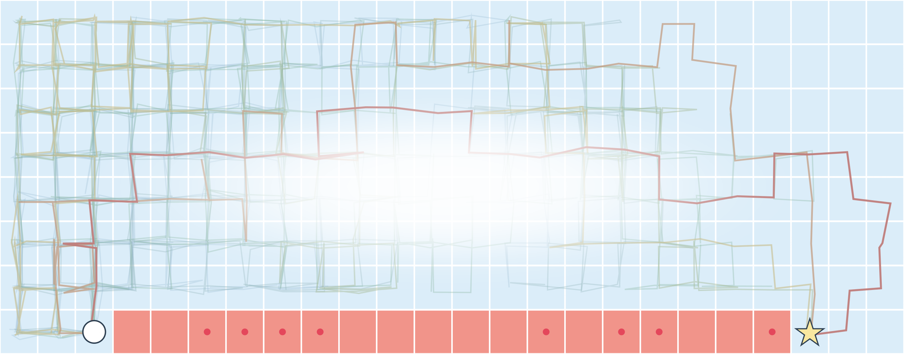
Rafael Fernandes Cunha
Dynamic Programming Backup

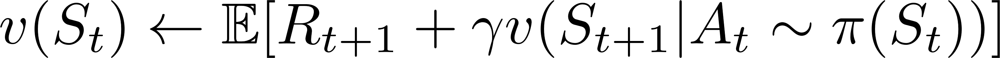

Expectation notation
Explicit probabilities
Between MC and TD: Multi-Step TD
Unified View of
Reinforcement Learning

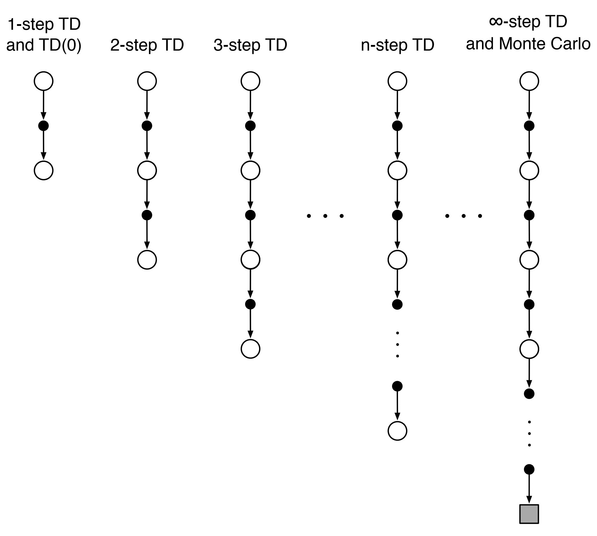
Multi-Step Prediction
Let the TD target look
steps into the future

-step returns
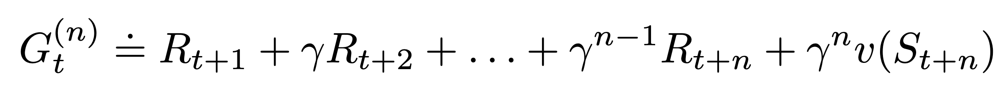
n-step TD
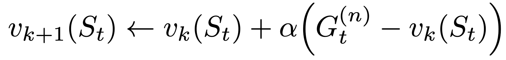
Generalized Policy Iteration (GPI)
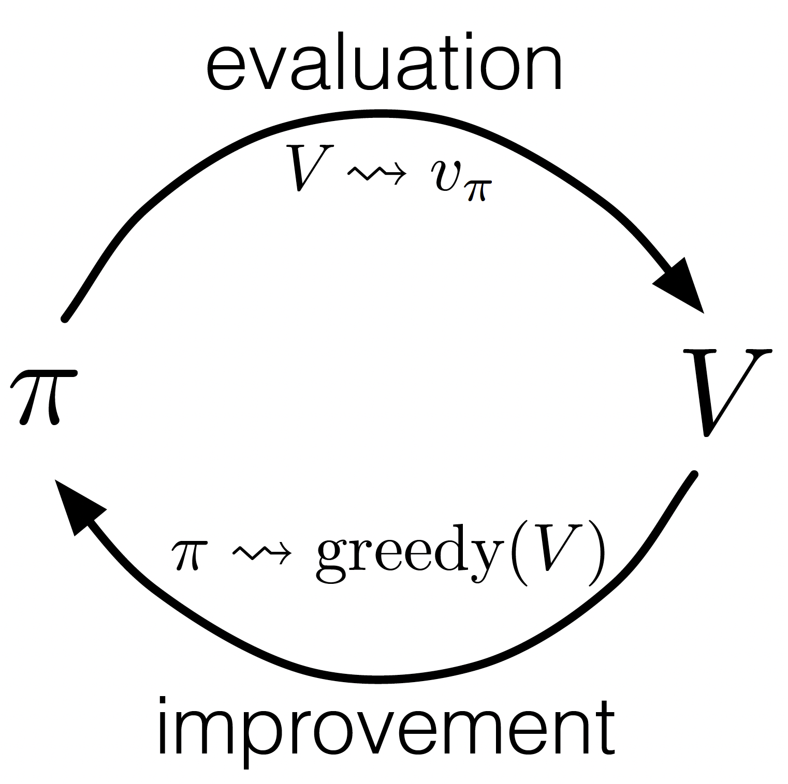


Alternating with some chosen iterations.
Greedy policy improvement over
requires the model of the MDP
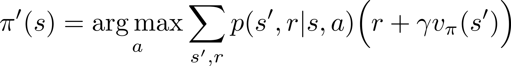
Greedy policy improvement over
is model-free
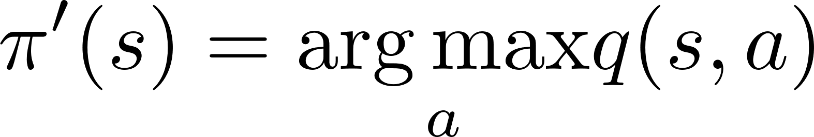
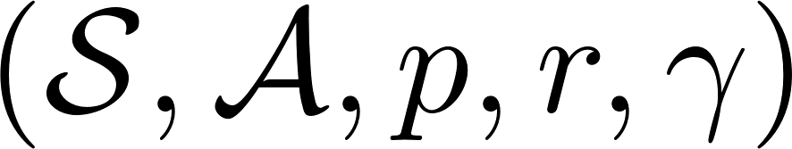
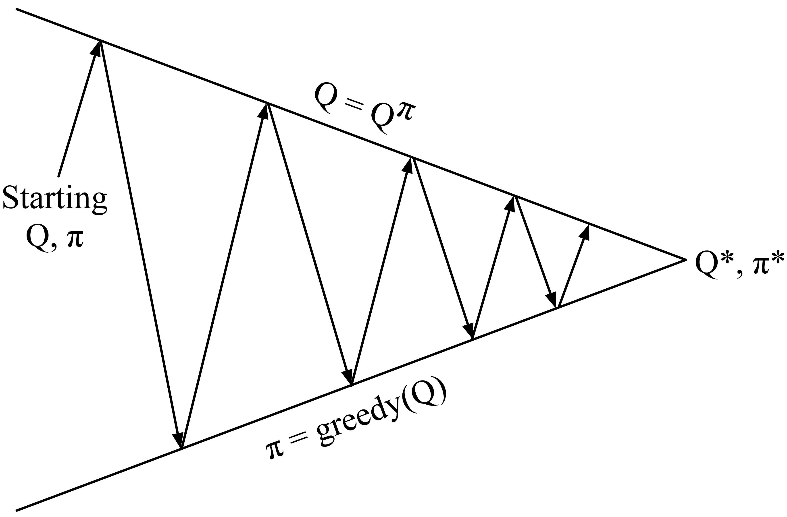
Generalized Policy Iteration (GPI)
Alternating with some chosen iterations.
Policy evaluation: Monte-Carlo
Policy improvement: Greedy Policy?
What is the problem here?
Can’t sample all s, a, when
learning by interaction!
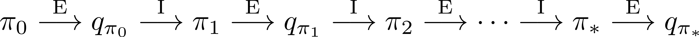
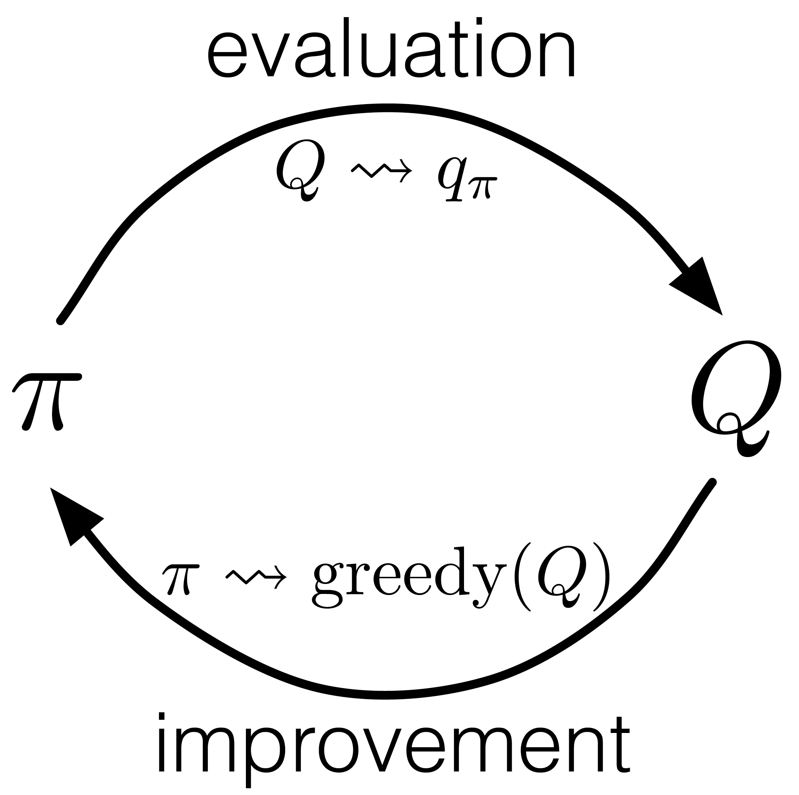
Generalized Policy Iteration (GPI)
Alternating with some chosen iterations.
Policy evaluation: Monte-Carlo
Policy improvement: -greedy Policy!
Keep exploring all s, a, when
learning by interaction!
-greedy
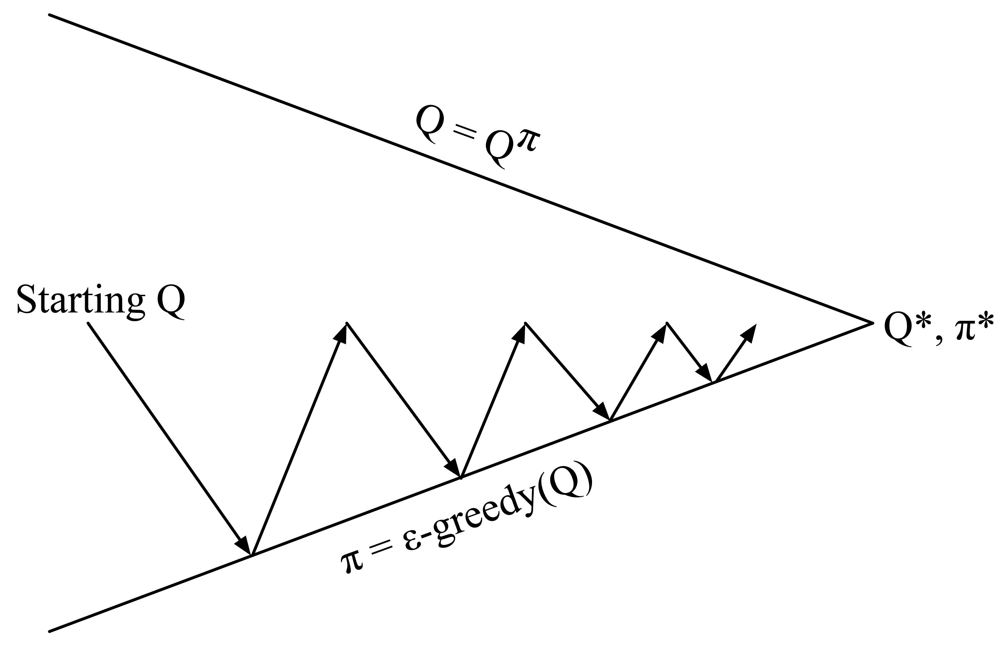
Importance sampling corrections
➢Example: estimate one-step reward
➢Behaviour is
![\begin{align*}
= \mathbb{E} \Big[\frac{\pi(A_t|S_t)}{\mu(A_t|S_t)}R_{t+1} | S_t = s, A_t \sim \mu \Big]
\end{align*}](media/8fad1d714d.png)
Importance sampling corrections
➢Example: estimate one-step reward
➢Behaviour is
Importance sampling corrections
➢Example: estimate one-step reward
➢Behaviour is
When following policy , use as unbiased sample!
![\begin{align*}
p_\pi(\tau) &= p_\pi(s_0, a_0, r_1, s_1, a_1, r_2, s_2) \\[1em] &= p_\pi(s_0, a_0, r_1, s_1, a_1) p(s_2, r_2 | s_0, a_0, r_1, s_1, a_1) \\[1em] &= p_\pi(s_0, a_0, r_1, s_1, a_1) p(s_2, r_2 | s_1, a_1) \\[1em] &= p_\pi(s_0, a_0, r_1, s_1) p_\pi(a_1 | s_0, a_0, r_1, s_1) p(s_2, r_2 | s_1, a_1) \\[1em] &= p_\pi(s_0, a_0, r_1, s_1) \pi(a_1 | s_1) p(s_2, r_2 | s_1, a_1) \\[1em] &= p_\pi(s_0, a_0) p(s_1, r_1 | s_0, a_0) \pi(a_1 | s_1) p(s_2, r_2 | s_1, a_1) \\[1em] &= p_\pi(s_0) \pi(a_0 | s_0) p(s_1, r_1 | s_0, a_0) \pi(a_1 | s_1) p(s_2, r_2 | s_1, a_1) \\[1em] &= p(s_0) \prod_{t=0}^{T-1} \pi(a_t | s_t) p(s_{t+1}, r_{t+1} | s_t, a_t)
\end{align*}](media/d946e2cfd9.png)
Importance Sampling for Off-Policy Monte-Carlo
➢Goal: estimate
➢Data: trajectory generated with
➢First-step: Compute the probability of a trajectory generated following policy
Definition of conditional probability on
Markov Property
Def. of conditional probability on
Importance Sampling for Off-Policy Monte-Carlo
➢Goal: estimate
➢Data: trajectory generated with
➢First-step: Compute the probability of a trajectory generated following policy
Definition of conditional probability on
Markov Property
Def. of conditional probability on
Definition of policy (“It is Markov”)
Conditional probability on
Definition of policy on
General formulation for trajectories until Terminal state.
Importance Sampling for Off-Policy Monte-Carlo
➢Goal: estimate
➢Data: trajectory generated with
➢First-step: Compute the probability of a trajectory generated following policy
Importance Sampling for Off-Policy Monte-Carlo
➢Goal: estimate
➢Data: trajectory generated with
➢First-step: Compute the probability of a trajectory generated following policy
➢Solution: use return , and correct: